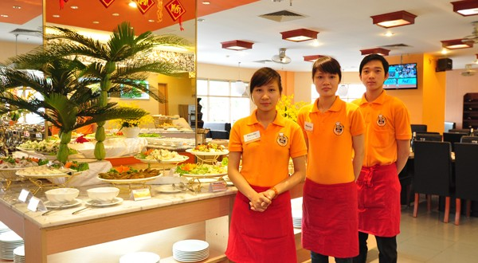

THÔNG TIN NHÀ HÀNG
Nhà hàng với đội ngũ nhân viên tư vấn online - offline làm việc liên tục.Đúng như cái tên nhà hàng 24/7.Luôn tư vấn khách hàng khi học cần thiết.

Diện tích nhà hàng được xây dựng trên một khuôn viên rộng 1.3ha nên có cấu trúc rất rộng.Màu sắc thiết kế trang nhã lịch sự,phân ra ra các đại sảnh lớn với hậu trường bên trong phù hợp với việc chuẩn bị hội nghị,đám cưới và các buổi tiệc tùng lớn.Phong cách thái độ phục vụ tận tình luôn làm nên sự khác biệt của Nhà Hàng 247.Với tiêu chí Khách hàng là thượng đế luôn đặt sự ngon miệng-thoải mái của khách hàng lên hàng đâu.
Địa chỉ số 132 Lò Đúc - Hai Bà Trưng - Hà Nội
SỐ ĐIỆN THOẠI ĐƯỜNG DÂY NÓNG 0162.827.9102